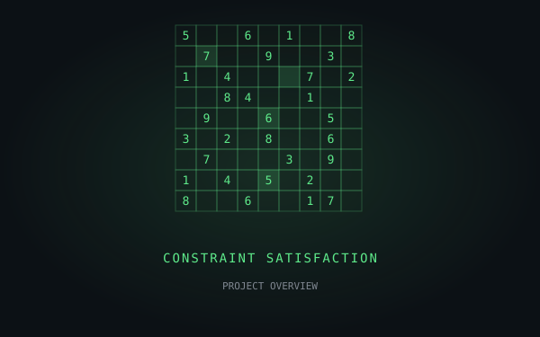
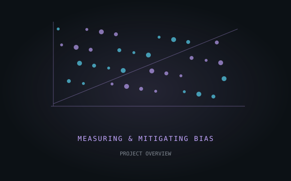
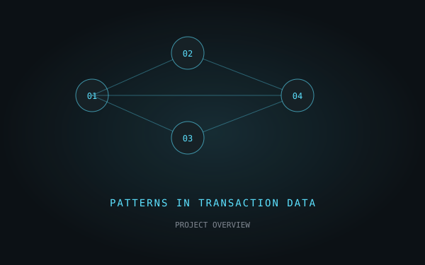
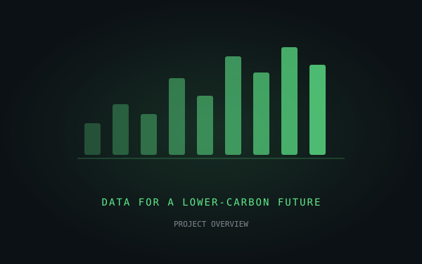
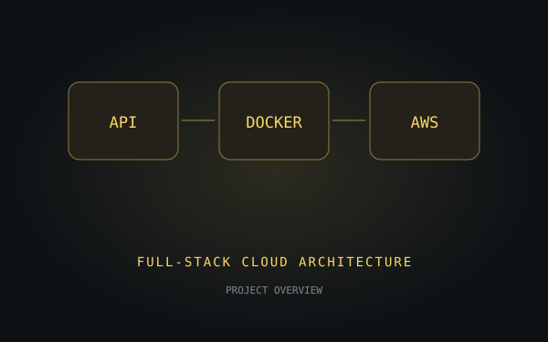

NineByNine AI
An interactive Sudoku solver that compares backtracking, MRV, forward checking with AC-3, and min-conflicts. Explore how different search strategies solve the same puzzle.
- Python
- React
- CSP
- AC-3
>Welcome to my portfolio!
Enjoy your stay :D
Software EngineerData & Cloud EngineerAI Enthusiast
Featured
NineByNine AI: explore the project
Boston, MA · M.S. Computer Science, Northeastern University

An interactive Sudoku solver that compares backtracking, MRV, forward checking with AC-3, and min-conflicts. Explore how different search strategies solve the same puzzle.

Measured gender bias in GloVe embeddings with WEAT, then evaluated a gender-direction debiasing technique and its fairness–utility trade-offs.

A Java and MySQL system for analyzing 10,000+ transactions and flagging suspicious patterns, including account hopping and offshore fund flows.

A PostgreSQL data system for processing historical emissions records across 50+ cities, with Spark workflows and an automated training and deployment pipeline.

A full-stack application with RESTful APIs, PostgreSQL, and Docker, deployed on AWS EC2 and ECS.
Built and improved enterprise data systems, from SQL performance to automated pipelines and reliable deployments.
M.S. Computer Science · Aug 2024 – Apr 2026
Boston, MA · GPA 3.5/4
B.Tech. Computer Science and Engineering · Aug 2018 – Jun 2022
Bangalore, India · CGPA 8.88/10
Languages Java · SQL · Python
Data PostgreSQL · MySQL · MongoDB · ETL/ELT
Cloud AWS · GCP · Docker
DevOps Git · GitHub Actions · CI/CD
> let's build something together.
or email me at miharia.ay@northeastern.edu